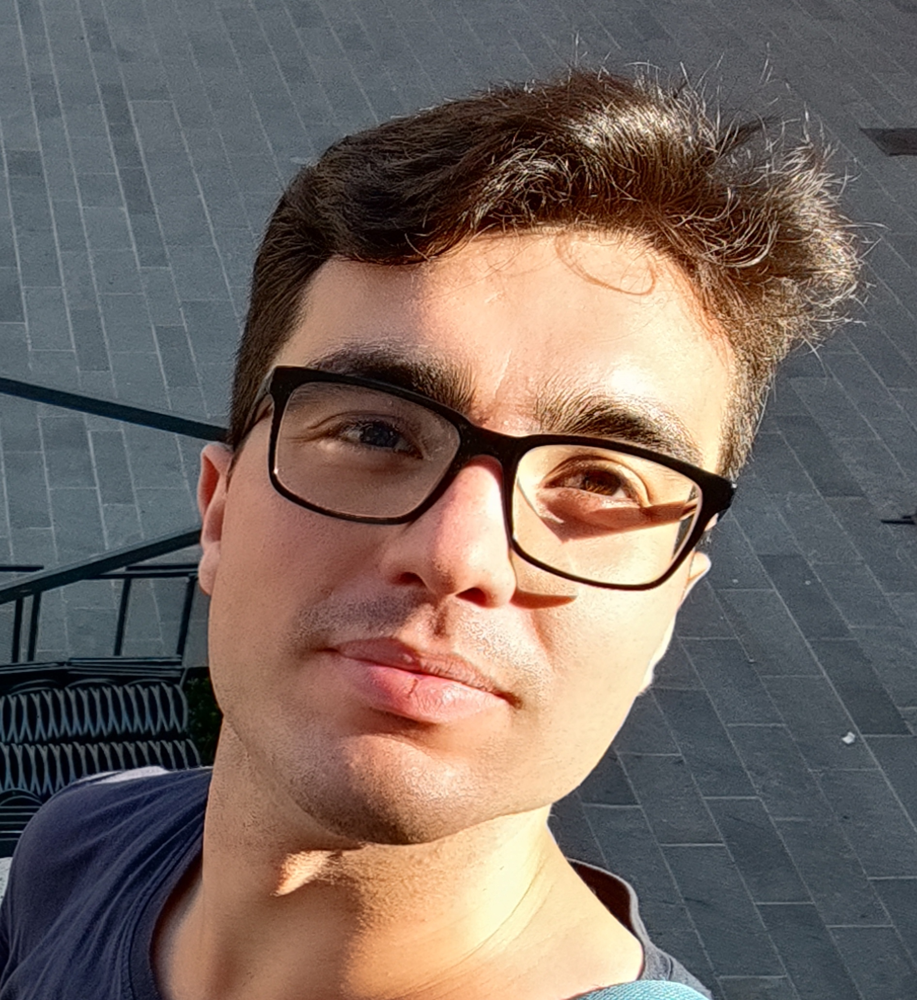
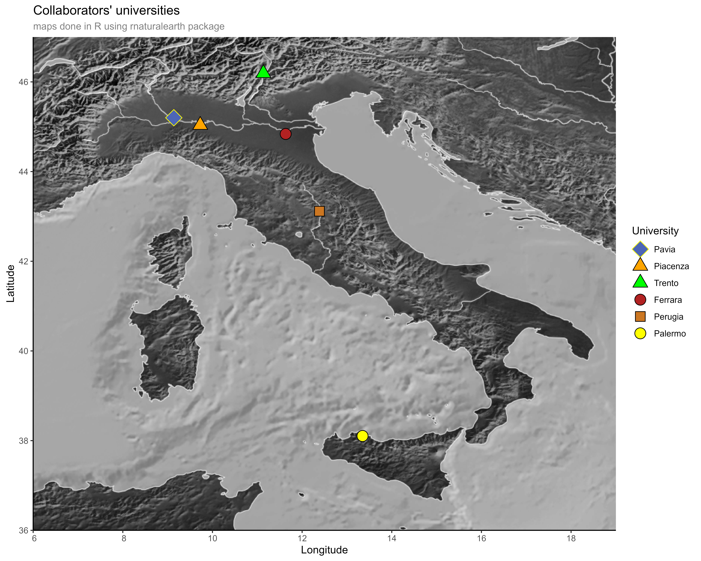

See my research

I am a PhD student specializing in population genomics, both on nuclear genome and mitochondrial DNA.
My interests are:
- The evolution of humankind from our common ancestor with chimpanzee and bonobo;
- Our history as humans after our exit from Africa in forming our current populations and diversity.
To do that I explore the maternal history that we can infer from our mitochondria, and how current mtDNA lineages have spread in various populations.
To uncover the general history of a population instead, I focus on patterns of kinship, ancestry, and geographic distribution that I can infer from complete genomes
by combining cutting-edge bioinformatics tools with statistical analysis.
My aim is to uncover the connections between genetic data and human history, contributing to our understanding of evolution, migration and not recorded history.
-
26/08/2025 – 29/08/2025
11th International Symposium on Biomolecular Archaeology (ISBA11), Turin, Italy
Poster presentation
Villani, G., Rambaldi Migliore, N., Tommasi, A., Cardinali, I., Somenzi, E., Di Gerlando, R., Partel, E.,
Chero Osorio, A.M., Martellozzo, N., Raffaetà, R., Colli, L., Olivieri, A., Hauffe, H.C., Lancioni, H.,
Ajmone Marsan, P., Torroni, A., Achilli, A.
Deciphering the genomic history of the Rendena Valley people.
https://www.isba11.com
Courses and Advanced Training
-
14/02/2023 – 27/02/2023
Bioinformatics and Deep Learning for Biodata Analysis
24th Bologna Winter School, Alma Mater Studiorum – University of Bologna
-
19/08/2024 – 23/08/2024
Summer Course in Analysis of High Throughput Data for Population Genetics
Department of Biology, University of Copenhagen
Copenhagen, Denmark · 4 ECTS · Field: Genomics
https://website.popgen.dk/summer/
-
23/06/2025 – 29/06/2025
EMBO Practical Course – Population Genomics: Background and Tools
Castellammare di Stabia, Napoli, Italy
Poster presentation at the course
Villani, G., Rambaldi Migliore, N., Tommasi, A., Cardinali, I., Somenzi, E., Di Gerlando, R., Partel, E.,
Chero Osorio, A.M., Martellozzo, N., Raffaetà, R., Colli, L., Olivieri, A., Hauffe, H.C., Lancioni, H.,
Ajmone Marsan, P., Torroni, A., Achilli, A.
Connections and isolation in the alpine valley of Rendena, Trentino Alto Adige/Südtirol, Italy.
https://meetings.embo.org/event/25-pop-genomics
-
Anna Tommasi†, Rajiv Boscolo Agostini†, Giacomo Villani†, Rambaldi Migliore, N., Vizzari, M.T., Cardinali, I., Di Gerlando, R., Nicolini, V., Sorasio, G., Santos, P., et al. "Fifteen millennia of human mitogenome evolution in Sicily." Science Advances 11, eady1674 (2025).
https://doi.org/10.1126/sciadv.ady1674
† These authors contributed equally to this work.
-
Villani, Giacomo. "Sicily: from fifteen millennia ago to present". Divulgative article, nov. 2025.
Read the full article
-
Villani, Giacomo. "Un gambero per il Madagascar". Sapere, n. 6, feb. 2023, pp. 46–47. ISBN: 9788822094599.
-
IMAGINE A UNIVERSE, INFINITE OR NOT, AS YOU WISH – Anthology of stories from the "Premio Fredric Brown, 1st Edition" VOL. 2.
Various authors.
ISBN: 9791280815361
Pages: 288
Story: "The Cloud Climber".
-
Fiction award Monica Frascari: honour mention (2015 and 2016).
National literary prize "Terra di Guido Cavani": junior section, fourth place (2016).
Participation in IV Certamen of Italian History and Literature of Venaria Reale (2017, essay).
-
Degree Merit Award – Alma Mater Studiorum University of Bologna (04/12/2023, academic year 2021/2022).
Institution
Department of Biology and Biotechnology "L. Spallanzani"
Via Adolfo Ferrata 5, 27100 Pavia
University of Pavia
Italy
Email
giacomo.villani02@universitadipavia.it
Socials


